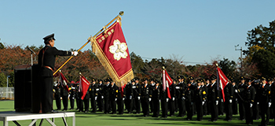
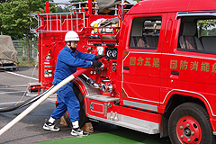
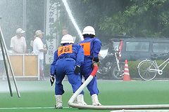

| ①消防団のみなさんは、消防を本業として生計を立てているわけではありません。 普段それぞれに職業を持ち、火災などが発生したときに現場に出場します。消防団員は特別職の地方公務員なのです。   |
| ②地方公務員には一般職と特別職とがあります。 特別職の地方公務員とはどのようなものか、見てみましょう。 特別職の地方公務員として非常勤の消防団員及び水防団員の職が定められています。(第3項第5号) つまり、消防団員は、市町村長、議員などと同じ特別職の地方公務員なのです。 特別職の地方公務員としての制約をまとめてみます。 (1)消防団員は消防団長から任命されます。任命権は消防団長にあります。 (2)消防団への入団、退団は自由です。ただし、行政処分などで免職される場合があります。 (3)消防団の地位を利用しての選挙活動はできませんが、個人として政党に入党すること、 公職の候補者になること、選挙運動をすることは自由です。 (4)ほかの公職に就任して差し支えありませんが、一定の手続きなどが必要な場合があります。 |
| ③消防は市長村長が管理することとなっています。 消防団長には団員を指揮監督する権限があり、消防団に関する事務を取りまとめています。 消防組織法のなかの第1条、第6条、第9条で次のように規定されています。 消防の任務は、火災から地域住民の生命、身体および財産を保護するとともに、水害、地震、台風などの様々な災害に対して、事前に直接的な原因の除去を行い、災害が発生した場合は、被害の拡大防止および縮小を図ることと規定されています。市町村は、その区域における消防を十分に果たすべき責任があります。消防団は、消防署と同じ消防機関の一つであり、様々な消防事務を処理しています。ただし、消防の任務でない事務に携わることはできません。 |
| ④皆さんの所属する消防団という団体はどのような性格の団体なのでしょうか。 江戸の昔から消防の言葉に「自らの郷土は自らで守る」という精神があります。自分たちの住む町を自分たちで守ることが江戸の町火消以来、消防団の基本であり伝統なのです。地域住民から愛され、親しまれ、信頼され、現代においてもその精神が変わることはありません。 消防団は、わが国だけでなく、世界各国に組織されています。各国消防の発展や国際親善に役立てようと、世界中の消防団が集まり「世界義勇消防連盟」が設立されました。その事務局は日本の財団法人 日本消防協会に置かれています。 |
| ⑤消防団活動では、特別な場合を除きチームで行動することが要求されます。 危険な災害現場での活動や、様々な任務において、指揮命令系統をはっきりし、リーダーの指示に従い、活動することが最も重要なのです。そこで組織活動を的確に実施するために消防団は、厳格な階級制度をとっています。消防団員の階級は、団長、副団長、分団長、副分団長、部長、班長、団員の7階級に分けられています。  |
| ⑥実際の活動の中で、地域や他の消防機関とどう関わっていくのか、消防団の機能を知り、その特性を活かした活動が期待されています。消防団の位置づけ、役割を見ていきましょう。 第1は普遍性です。 消防団は全国ほとんどの市町村で組織され市町村内全域で活動して、どのような場所で災害が発生してもすぐに対応することが可能です。 第2は地域密着性です。 地域の住民が消防団員になっている場合が多く、地域とのつながりが深く、様々な事情について精通していることから、災害時の救助、避難には欠かせない存在です。 第3は即時対応力です。 定例的に教育訓練を受け、消防に関する専門的な知識、技能を身につけているので、災害に対し、迅速・的確な対応が可能となります。 第4は多面性です。 単に消火作業を行うだけでなく、火災予防の面でも住民指導、巡回広報などを実施し、地震および風水害などの各種災害の防ぎょ活動に当たるほか、遭難者の捜索救助、各種警戒などの活動を行い、地域の安心・安全確保に尽力しています。 第5は要員動員力です。 消防団員は全国で約86万人(平成25年4月現在)で、常備消防職員約15万人の約6倍の人員を持ちます。特に大規模災害時や林野火災時には、要員を動員し、効果的な災害防ぎょ活動に当たることが出来ます。 第6は広域運用性です。 消防団は、大規模災害時には相互応援協定などにより、その管轄区域を越えて広範囲な活動を行うことが出来ます。 このような昨今の情勢を踏まえ、平成16年6月14日に国民保護法をはじめとする有事法制関連法が国会で可決され、成立しました。国民保護法とは、正式には「武力攻撃事態等における国民の保護のための措置に関する法律」といいます。国民保護法は、武力攻撃から国民の生命、身体及び財産を保護し、武力攻撃が国民生活及び国民経済に与える影響を最小とするため、国、都道府県及び市町村の具体的な役割分担、指定公共機関の役割、国民の保護のための措置の実施体制等について定められています。この中での消防団の大きな役割は、武力攻撃事態などに至った場合、市町村長の指揮のもと、避難住民を誘導しなければなりません。この場合、消防団は、消防長又は消防署長の所轄のもとに行動するものとされています。 |

|
|
|